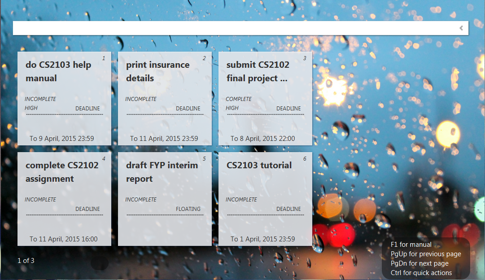

mnemonical mne·mon·ic-cal (nĭ-mŏn'ĭk-kal)
adj.
"A device, such as a formula, rhyme or sound, used as an aid in remembering or creating an experience."

MnemoniCal is a JAR program where no installation is needed and is "mouse-free". UUser can now organize their daily tasks with no hard effort but just using natural language to enter commands purely from on keyboard. MnemoniCal also allows users to save their own personal task lists in human readable .txt format file! No more missing of deadlines or losing track of daily tasks!
Created with the Personal Edition of HelpNDoc: Full-featured multi-format Help generator